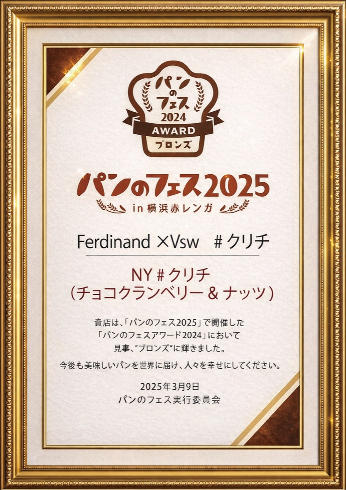
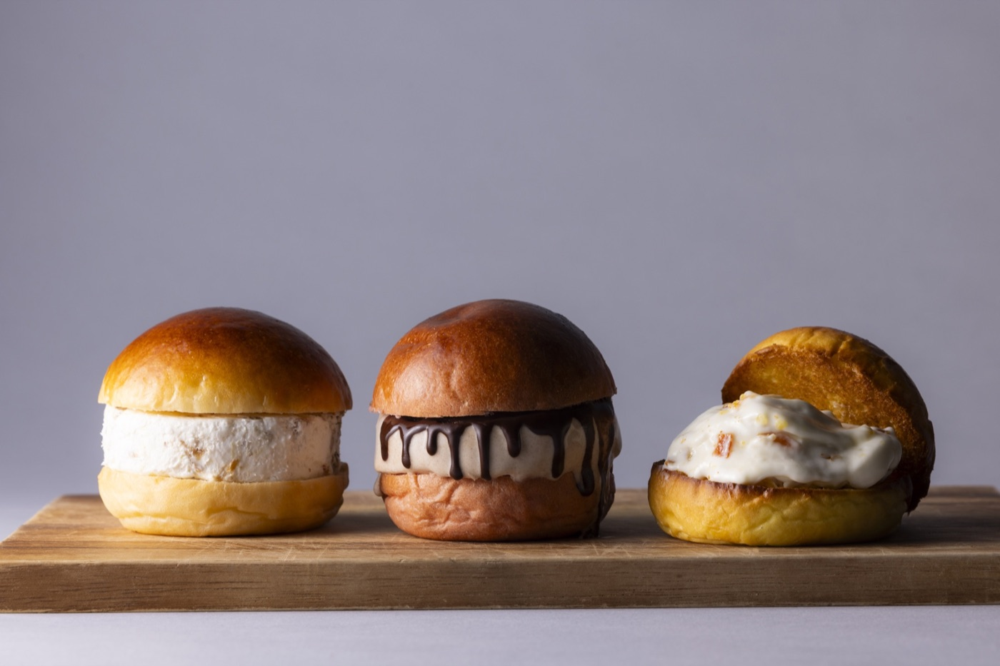
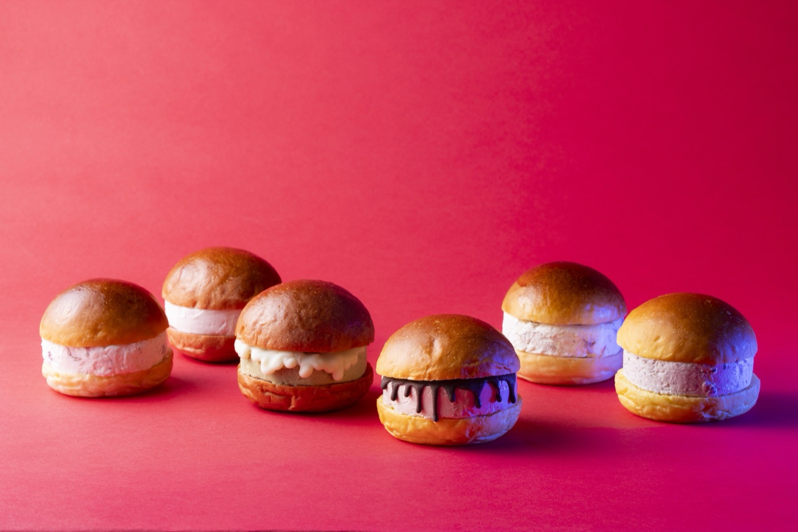

こんにちは！マーケティング担当のTOMです。
2026年3月7日〜9日に開催された「パンのフェス2026 in 横浜赤レンガ」、3日間本当にたくさんの方にお越しいただき、心より感謝申し上げます！🙇✨
🥈 おかげさまで、シルバーアワード受賞！

2025：ブロンズ 🥉
2026：シルバー 🥈
一段、のぼりました。次はGOLD。
アワードパン「NY#クリチ（チョコクランベリー＆ナッツ）」が、パンのフェス2026 アワード部門にてシルバー賞をいただきました。昨年のブロンズから一段、ランクアップでのご報告です。
会場でNY#クリチを手に取り、投票してくださった皆さま、ブースに足を運んでくださった皆さま、本当にありがとうございました。🥹✨
📸 現地レポート


3日間で朝から晩まで行列が途切れず、過去最高のテンポでの販売となりました。会場でお声がけくださったファンの皆さま、新しく#クリチを知ってくださった皆さま、全員に「ありがとうございました」とお伝えしたいです。
🎉 3日間 約2,000個、完売御礼
開催期間中、NY#クリチシリーズは連日完売。3日間でおよそ 2,000個 を販売し、全フレーバーが完売となりました。お買い求めいただけなかった皆さまには、心よりお詫び申し上げます。
今回出品したのは、以下の3種です。
- アワードパン【NY#クリチ（チョコクランベリー＆ナッツ）】
- 限定パン【NY#クリチ（抹茶＆あんこ）】
- おすすめパン【NY#クリチ（いちじく＆ナッツ）】
🧀 クリチちゃんからのごあいさつ
こんにちは〜！わたし、クリチちゃん！🧀✨
クリームチーズがだ〜いすきな、元気な女の子です♪
シルバーアワード、ほんとうにありがとうっ！みんなの「おいしい！」が、今年もまた、わたしたちをひとつ上に連れてきてくれました。
でもね…
「次はGOLD、ぜったい取るもん！」
「そして、世界に広がるフードチェーンにするのが夢なの〜っ！」
「これからも応援よろしく〜✨」
🛒 オンラインショップでも販売中
会場に来られなかった皆さまにも、NY#クリチシリーズをお届けできるオンラインショップがあります。受賞記念ラインナップも順次追加予定です。
🚀 これからの #クリチ
- 関西エリア初出店「てくてくパンまつり神戸」での販売
- 全国各地のパンフェスへの継続出店
- メタバース空間「KURICHI LAND」での受賞記念イベント
- 組み立て玩具「ハリチくん shi-gu-mi」との世界観連動
ブロンズの次は、シルバー。その次は、もちろんGOLD。
来年のパンのフェス2027でも、またお会いしましょう。🍞✨